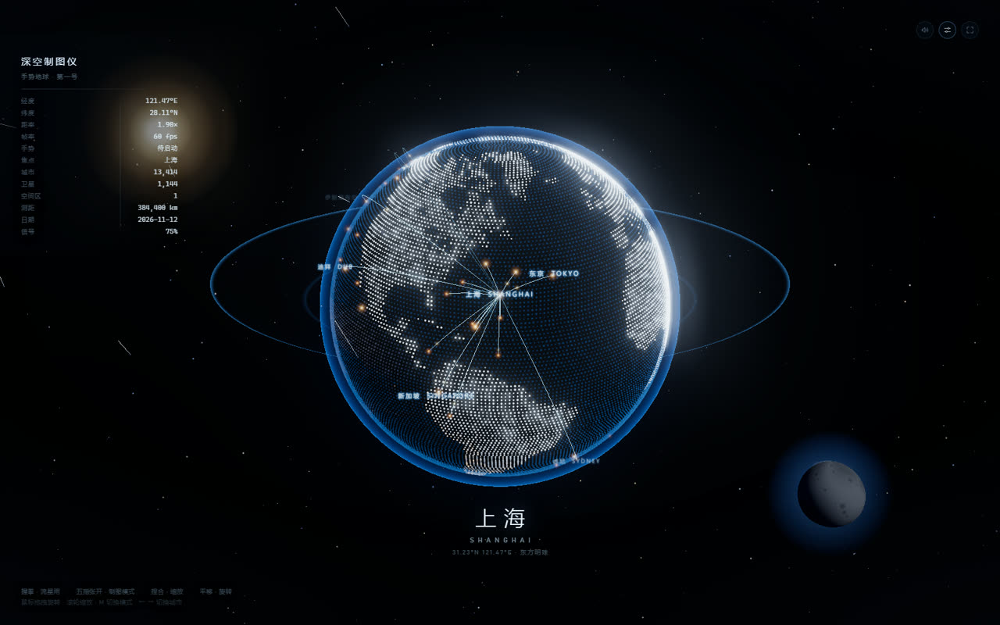
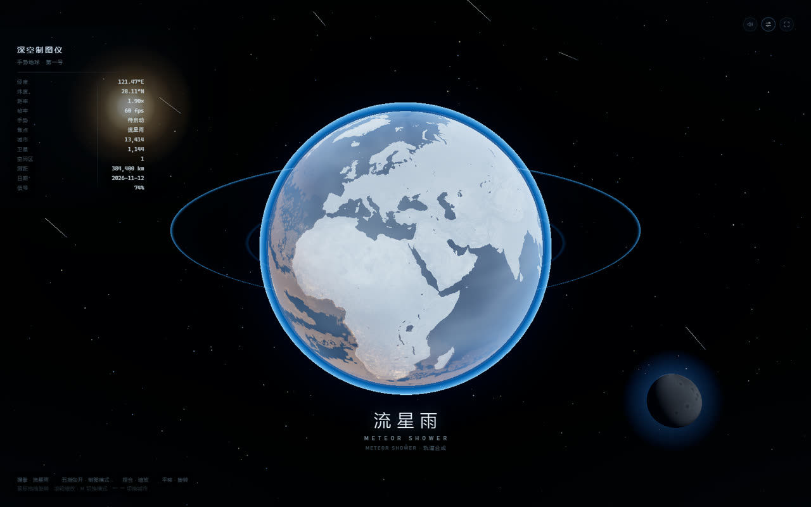

背景与目标
起点是一段竖屏演示视频：左上角是滚动遥测面板，中央是点阵地球与城市间弧线，下方是大号城市名，月球与恒星构成空间纵深。我想把它做成一个可以真的跑起来的网页装置 —— 不需要安装、不需要后端，还要能在集显笔记本上跑到 60fps。
因此约束先定下来：纯静态可部署（GitHub Pages 子路径也要能用）、手势推理在浏览器本地完成、无摄像头时用鼠标与键盘也要能完整操作。
2 种模式制图模式 / 流星雨模式，uniform 层插值切换
6.4 万点经纬等距抽样的点阵地球
21 个关键点MediaPipe 手部关键点，本地 WASM 推理
两种模式
01
制图模式 · 点阵地球
陆地比海洋更亮，夜间城市由夜光贴图采样出金色灯点；50 座城市之间按球面大圆插值生成抬升弧线，弧线按目标城市的朝向淡入淡出。捏合缩放、手掌平移旋转、方向键切换焦点城市。
02
流星雨模式 · 实体球
握拳触发：点阵过渡为带云层、大气辉光与蓝色光晕环的实体地球，外圈出现轨道环，星空同时划过流星；五指张开回到制图模式。切换只插值着色器状态，不重建几何。
03
构图挂在相机下
HUD 引线、月球、光晕环与轨道环都是相机的子对象，缩放与旋转时构图关系保持不变，缩放不会把月球挤出画面。
04
相机轨道代替自转
地球本身不旋转，改为绕地球移动相机，避免远距离物体在大坐标下累积浮点误差，弧线与点阵的定位也随之稳定。
关键实现
- 点阵着色器：等距抽样生成点阵几何，顶点着色器按经纬度重建位置，逐点计算昼/夜、陆地/海洋与城市夜光，颜色在线性空间混合后再做色调映射。
- 屏幕空间城市标签：标签是 HTML/CSS 而非贴图，按相机朝向与 NDC 边界过滤背面与边缘，避免文字在球面背面反着贴上来。
- 后处理：UnrealBloom 与自定义 ACES 色调映射配合，让大气边缘发光但不糊掉城市灯点。
- 手势到参数：21 个手部关键点换算成捏合距离、手掌旋转角与握拳置信度，经平滑与死区处理后驱动缩放、旋转与模式切换，抖动被吸收在参数层而不影响帧率。
- 资源自托管：MediaPipe WASM 与手部模型由脚本复制到
public/，统一用import.meta.env.BASE_URL拼路径，因此同一份构建既能跑在根路径，也能跑在/particle-earth-hand/子路径下。
Vue 3ViteTypeScriptThree.jsMediaPipe Tasks VisionWebGL ShaderGitHub Pages
画面
制图模式 · 上海

左侧遥测面板给出经纬度、帧率、焦点城市与测距等信息；底部是大号城市名与副标题；城市标签和弧线在球体正面才出现。
流星雨模式

同一个地球换了渲染路径：云层、大气菲涅尔与光晕环出现，轨道环与月球保持构图，星空同时划过流星。
结果与验证
- 在只有 Intel Iris Xe 集显的笔记本上稳定 60fps（1600×1000 窗口，双模式均验证）。
- 手势推理全部在本地 WASM 中完成，摄像头画面不离开浏览器；权限门明确提示只在本机计算。
- 无摄像头也能完整操作：鼠标拖拽旋转、滚轮缩放、方向键与 M 键切换模式与城市。
- 同一份构建已验证根路径与 GitHub Pages 子路径两种部署方式，WASM 与模型资源均正常加载。
- README 记录了模式对照表、手势/键盘/鼠标映射、URL 参数（
?preview=1&city=上海）与已知限制。